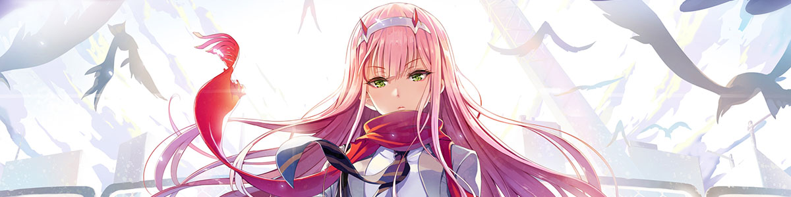
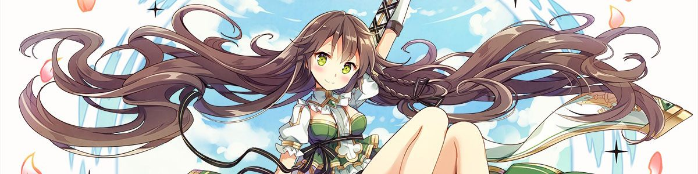

Trần Trung Kiên / KyotaFill
Mình là sinh viên AI/ML và IoT tại Đại học Kinh tế Thành phố Hồ Chí Minh,
tập trung vào thị giác máy tính, sản phẩm ứng dụng AI, tự động hóa và hệ thống nhúng.
const kyotafill = {
role: "Sinh viên AI/ML & IoT",
location: "TP. Hồ Chí Minh, Việt Nam",
mission: "Học → Xây dựng → Đo lường → Cải tiến"
};

FoodVision AI
Sản phẩm nhận diện món ăn đầu cuối, kết hợp mô hình TensorFlow, dịch vụ FastAPI và giao diện Next.js hoàn chỉnh.
image → model inference → FastAPI → Next.js result
Đọc hình vẽ tay tự do và chuyển đổi chúng thành các hình học 2D được số hóa chính xác bằng pipeline thị giác máy tính.
Smart Home IoT
Hệ thống nhà thông minh mô phỏng giúp giám sát môi trường và điều khiển thiết bị bằng ESP32, MQTT, Node-RED và Wokwi.
SmartCampus Service Desk
Quy trình hỗ trợ trong trường học để gửi, phân công, trao đổi và theo dõi các yêu cầu kỹ thuật hoặc học vụ.
Terminal Setup
Không gian làm việc Tauri giúp gom các phiên terminal và đơn giản hóa quy trình phát triển chạy nhiều tiến trình.
Anime Lecture Studio
Công cụ sáng tạo kết hợp tổng hợp giọng nói, theo dõi webcam và tự động hóa FFmpeg để tạo nội dung bài giảng bằng AI.
Không tìm thấy dự án phù hợp.

Công nghệ sử dụng
| Lĩnh vực | Công cụ |
|---|
| AI & thị giác | TensorFlow, OpenCV, scikit-learn, NumPy, MobileNetV2 |
| Sản phẩm web | Next.js, React, TypeScript, FastAPI, Node.js |
| Hạ tầng | PostgreSQL, Docker, Linux, Git, REST APIs |
| Hệ thống kết nối | ESP32, MQTT, Node-RED, PlatformIO, Wokwi |
Liên hệ & hợp tác
TP. Hồ Chí Minh / Việt Nam
Mình sẵn sàng hợp tác trong các dự án sinh viên, thử nghiệm AI thực tế và những sản phẩm kết nối phần mềm với thế giới vật lý.